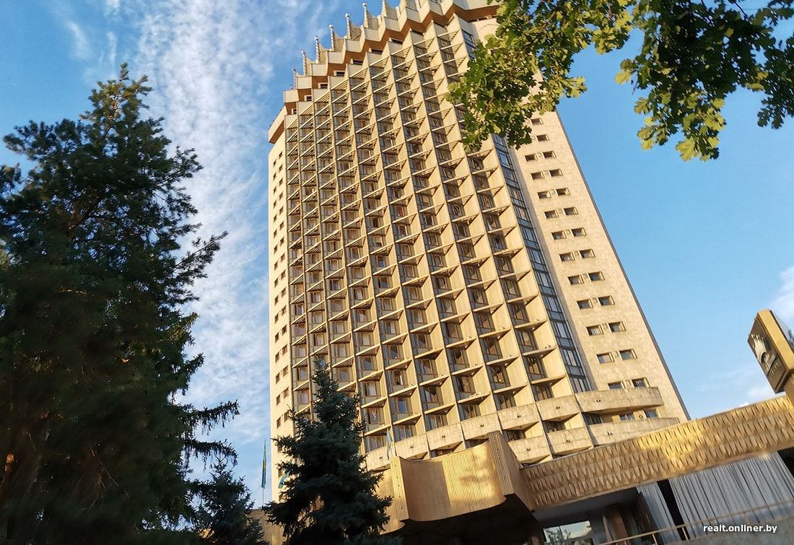
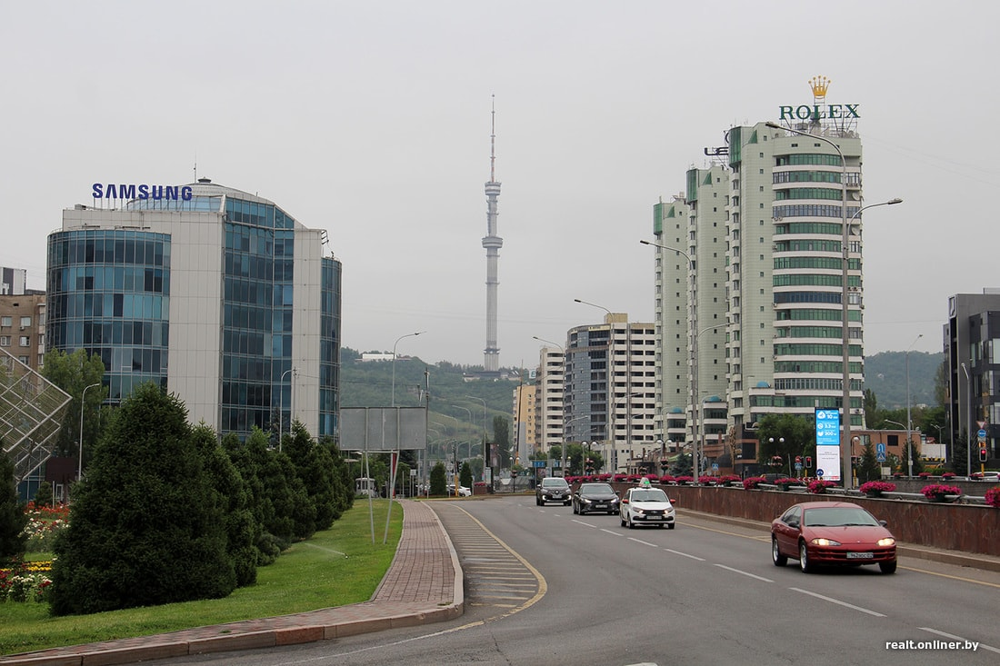
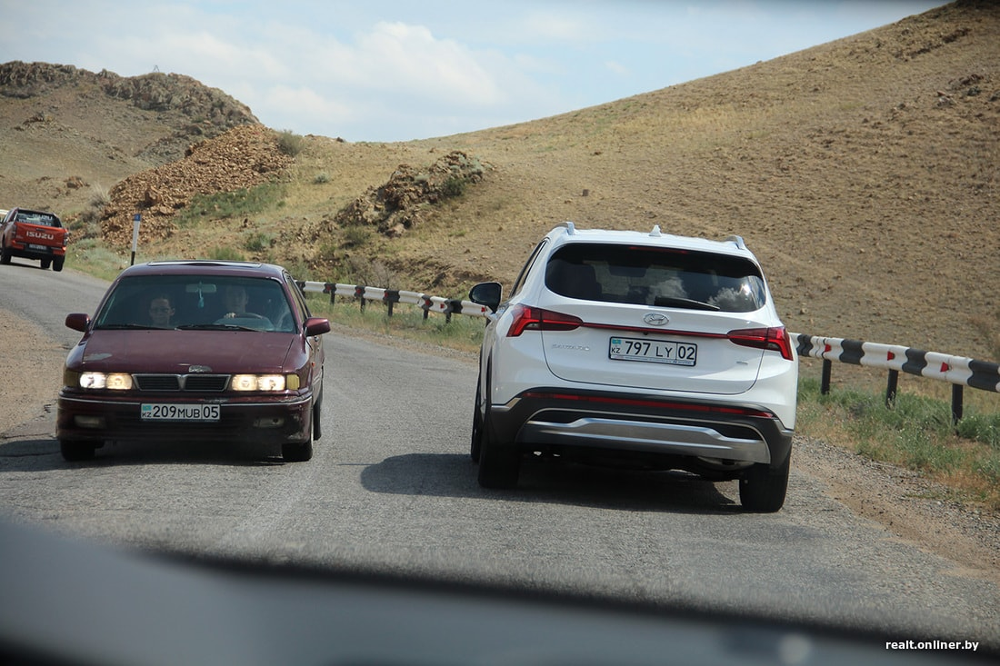
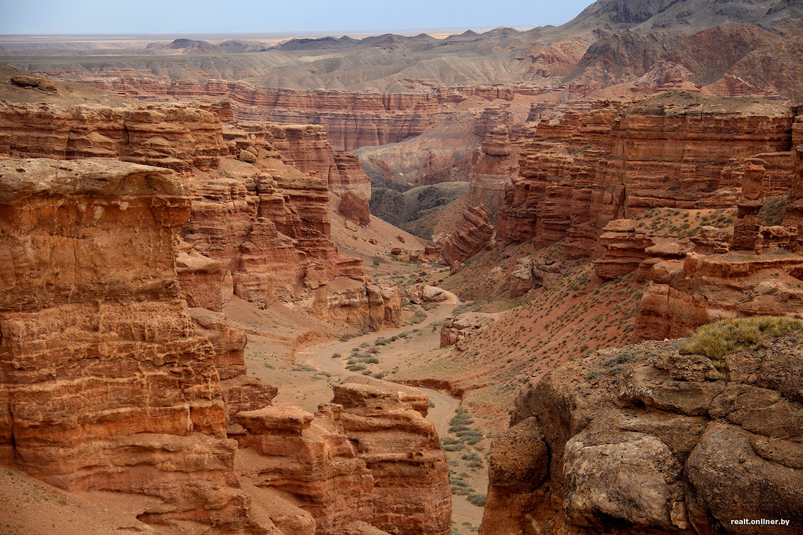
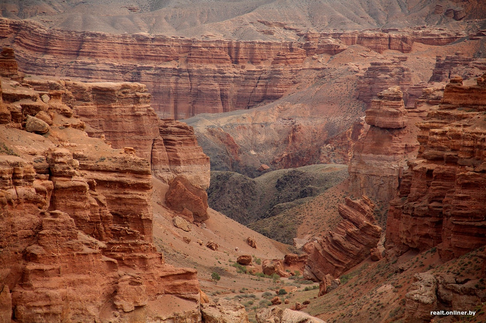
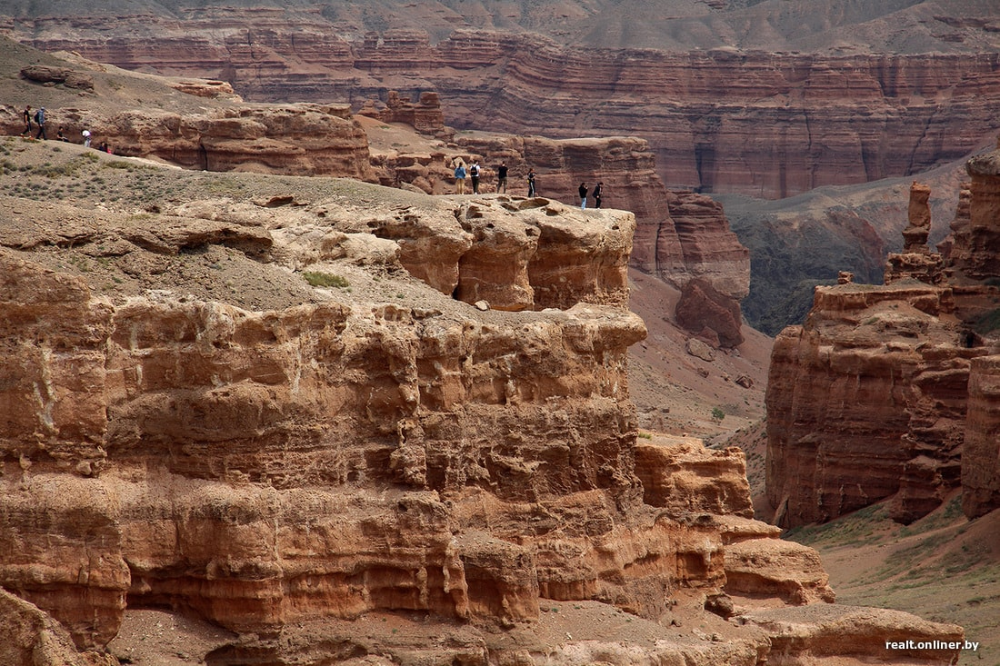

Отпуск в Казахстане? В контексте летнего отдыха эта страна приходит на ум в последнюю очередь. Степи, кумыс, Байконур. Да что там вообще делать? Но 2021 год многое изменил и заставил нас искать альтернативы Будве, Бургасу и Паланге. В начале июня у кого-то из друзей в сторис я увидел красивый каньон и горные озера с изумрудно-бирюзовой водой. «Это в Казахстане? Хм…» Неожиданно случилась командировка, и меня самого занесло в те места. В этой статье — краткий путеводитель по Алматы и окрестностям.
Сколько стоят билеты до Алматы
Лететь из Минска в Алматы целых пять часов (это один из самых длинных рейсов «Белавии»). Сейчас авиакомпания выполняет два рейса в неделю — по средам и субботам. Вылет в 20:05, посадка в 3:55 (время в Алматы на три часа опережает минское). Обратно — по четвергам и воскресеньям.
Что по ценам? Дорого. На конец августа «Белавиа» предлагает какой-то совершено дикий ценник в районе 1500 рублей за билеты туда-обратно (и это без багажа). В сентябрьском же расписании есть билеты по 935 рублей в обе стороны.
Сколько стоит жилье
Если ограничить поиск отелями с баллом не ниже 8, то Booking выдает варианты примерно от 500 рублей за 7 ночей (мы смотрим двухместные номера на середину сентября). 1089 рублей будет стоить номер в отеле «Казахстан», памятнике советской архитектуры, ставшем одним из символов города. Это средний ценник для хорошего отеля в центре.
Хостелы — от 126 рублей за те же 7 ночей (кровать в восьмиместном номере). Двухместный номер — в районе 300 рублей.
Апартаменты с баллом не ниже 8 — от 400 до 1500 рублей за неделю.
На чем ездить?
Самый удобный способ для передвижения по Алматы и ближнему пригороду — такси. Советуем прямо в аэропорту вызывать машину через мобильное приложение «Яндекс.Такси» и даже не пытаться торговаться с частниками, дежурящими у выхода. Говорят, случаи развода туристов на деньги здесь не редки. Ночью до центра города можно доехать и на автобусе — маршрут №3. Билет стоит 200 тенге, что на наши деньги составляет 1,2 рубля.
Поездка по городу продолжительностью 15 минут в «Яндекс.Такси» обойдется в районе 1400—1700 тенге (8—10 рублей). В тарифе «Эконом» приезжают Lada Granta, Daewoo Nexia и Lada Priora, в тарифе «Комфорт» — Hyundai Accent, Renault Logan и Kia Rio.
В Алматы есть каршеринг Anytime c тремя моделями в автопарке: Volkswagen Polo, BMW 320i и Nissan Qashqai. Приводим тарифы, актуальные для Polo:
- от 49 тг./мин. (от 29 коп.);
- 3 часа — 5999 тг. (36 руб.). Включенный пробег — 40 км, далее по 30 тг./км;
- 6 часов — 7999 тг. (48 руб.). Включенный пробег — 60 км, далее по 30 тг./км;
- 12 часов — 9999 тг. (60 руб.). Включенный пробег — 80 км, далее по 30 тг./км;
- сутки — 13 999 тг (84 руб.). Включенный пробег — 120 км, далее по 30 тг./км.
Стоит учесть, что в красивые горные места на каршеринге сгонять не получится. Районов, где не ловит интернет и мобильную связь, там хватает, а сервис в таких местах не работает. Для подобных путешествий лучше всего подойдет классическая аренда автомобиля. Машины вроде Hyundai Accent или Kia Rio будут стоить в районе 13 000 тенге в сутки (78 рублей), Toyota Camry с движком 2,5 обойдется в два раза дороже.
Бензин в Казахстане дешевый — примерно 1 рубль за литр на наши деньги.
В центре города полно камер — буквально гроздьями висят на столбах и контролируют все на свете: скорость, заезд за стоп-линию, пересечение сплошной, заезд на полосу общественного транспорта, парковку в неположенных местах. Вот какие штрафы:
- превышение скорости на 10—20 км/ч — 14 585 тг. (88 руб.);
- на 20—40 км/ч — 29 170 тг. (175 руб.);
- более 40 км/ч — 58 340 тг. (351 руб.);
- езда по пешеходной зоне — 43 755 тг. (263 руб.);
- парковка в специальных зонах без оплаты — 8751 тг. (53 руб.);
- перестроение без поворотника — 14 585 тг. (88 руб.);
- парковка на месте для инвалидов — 29 170 тг. (175 руб.);
- разговор по телефону за рулем — 14 585 тг. (88 руб.);
- непристегнутый ремень — 14 585 тг. (88 руб.);
- создание затора — 29 170 тг. (175 руб.).
Во время пеших прогулок по городу холмистый рельеф Алматы с непривычки может утомить. Весьма кстати шеринг электросамокатов. Минута — 30 тенге (18 копеек), час — 1380 (8,3 рубля). Для активации приложения нужна симка местного оператора связи. У сервиса, правда, есть свои заморочки. Например, самокат надо оставлять только на специализированных парковках.
Медеу и Шымбулак
Из центра Алматы 35 минут езды до Медеу. Выходишь из машины и обалдеваешь от бодрящего горного воздуха. Здесь на высоте 1691 метр над уровнем моря расположено грандиозное спортивное сооружение — самый высокий в мире конькобежный стадион. Построен он еще в середине прошлого века. Чистейшая горная вода, которой заливают площадку, превращается в высококачественный быстрый лед, за что каток был прозван «фабрикой рекордов».
На Медеу работает канатная дорога, связывающая спорткомплекс с горнолыжным курортом Шымбулак, расположенным на высоте 2260 метров. Садишься в кабинку и летишь над горными склонами, поросшими пушистыми елями. Полчаса удовольствия. Главное, чтобы вершины не заволокло облаками.
А если с погодой не повезло, можно испытать себя на выносливость и взобраться на верх селезащитной плотины по «лестнице здоровья». 842 ступени покоряются далеко не всем.
Поездка на канатной дороге в обе стороны обойдется в 3500 тенге (21 рубль) в будний день и в 4500 (27) в выходной. Обед в одном из местных кафе — в районе 4500 тенге (27 рублей) на человека.
Чарынский каньон
Три часа пути, и вы в месте, которое называют «младшим братом» Гранд-Каньона. Настоящее чудо природы!
Геологическая история этого ущелья началась десятки миллионов лет назад, когда территорию нынешнего каньона занимало огромное Илийское озеро. Со временем оно стало высыхать, а бурные водные потоки прорезáлись сквозь мягкие осадочные породы. Постепенно вода проникала все глубже, а ветер обтесывал известняковые скалы, вырезая причудливые фигуры.
Ущелье протянулось на 154 км по долине реки Чарын неподалеку от границы с Китаем и Кыргызстаном. Самую зрелищную часть каньона называют Долиной замков. Слишком уж похожи красно-оранжевые скалы на сказочные сооружения. А кто-то видит в них фигуры динозавров, сторожевые башни, головы уснувших великанов. Вот уж действительно величественная архитектура, созданная самой природой.
В Долине замков сухое русло и по нему можно прогуляться пешком. А можно обозревать красоты ущелья с ведущей по верху тропы и со смотровых площадок, расположенных над отвесными скалами. Ветра здесь сильные, так что к краям пропастей лучше не подходить.

Инфраструктуры в окрестностях каньона никакой (за исключением нескольких беседок и туалетов), так что не лишним будет захватить с собой перекус. И немного денег — проезд на территорию Национального природного парка стоит 790 тенге (около 5 рублей).